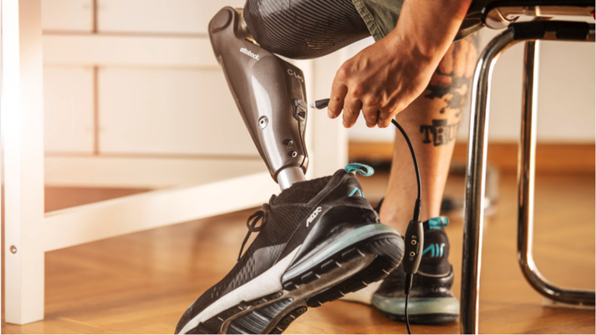
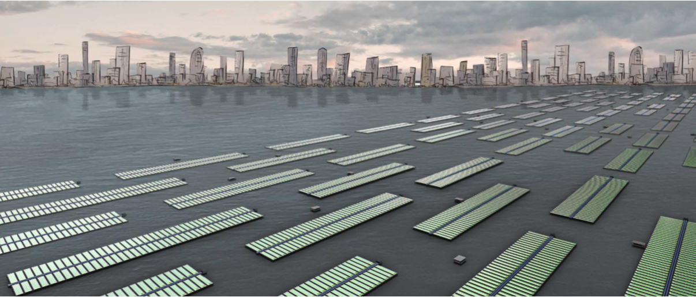

Prothese
De heer Scheepmaker heeft een bovenbeenprothese met een beweegbare knie. Het opladen is door een onpraktische oplaadport lastig en wordt vaak vergeten, wat soms leidt tot een niet-functionerende prothese op cruciale momenten.

Floating Future
Floating Future, geleid door Martin Hubers & Soren Knittel, creëert drijvende eilanden voor duurzame voedselproductie middels hydrocultuur. Uitdaging voor de leerlingen: Hoe voorzien we stedelijke gebieden, gelegen aan water, efficiënt van vers voedsel met deze eilanden?
